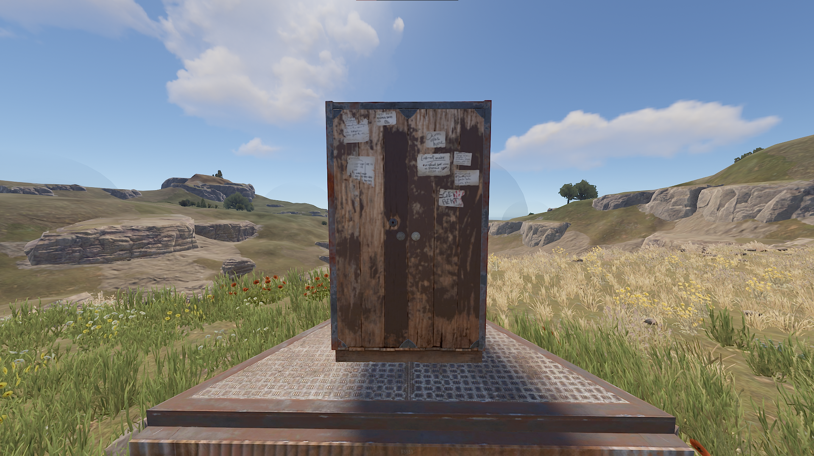

Építőanyagok
Ág fal
Fa fal

Kő fal
Fém fal
Magas minőségű fém fal
Ág fal
Fa fal
Kő fal
Fém fal
Magas minőségű fém fal
Az építési alkatrészek közé tartoznak a falak, alapok, padlók, lépcsők, ajtók, ablakok és tetők. Mind a háromszög és a négyzet alap 4lába is a földet vagy falat kell érnie annak érdekében hogy le lehessen rakni, ehhez egy tervezőlap és 20fára van szükség.
Tervezőlap (helyes)
Tervezőlap (helytelen)
Négyzet alap

Háromszög alap

Fal
Padló

Ajtó keret
Tető
A karbantartási idő arra az időtartamra utal, amíg egy épület anyagai el nem rohadnak és karbantartásra van szükség. Ez az anyagoktól függően változik.
Karbantartői szekrény
Karbantartási idő